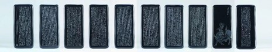

庞然为了参加今年的“陆子冈杯”活动专门设计制作的一套书画玉牌作品。

对于大道至简的老子，庞然创作了这组《道德经》套牌表其意，《道德经》中的思想充满了智慧，也是庞然玉雕修行道路上的精神良药。手握一套《道德经》，在心中时刻警醒自己的言行举止，这是作品创作的初衷。作品由一篇《史记·老子列传》和一部《道德经》构成。五千言的《道德经》，全部用雕刻难度最大的楷书完成，以砣代笔，笔法遒劲有力，墨迹挥洒飘逸，笔锋所至之处，工艺简洁流畅、卓越精湛。
作品法度严谨，五千言没有一个错字，书法雕刻的整体效果也近乎完美，即便在放大镜下欣赏作品，依然能看到完全出人意料的字迹清晰度。此作品中不管是书法还是绘画部分，庞然都选择了难度较高的阴刻技艺，完全把雕刻工具像用毛笔那样直截了当地在玉石上书写绘画。老子出关图中牛毛纹理细腻缜密，完全是顺应着牛毛的生长结构去雕刻的，根根分明错开，丝丝游动，生动逼真。
作品以书画相携，观之舒适，一套玉牌将诗、书、画等传统文化元素融为一体，既有书画之韵味，又有玉石文化之积淀，给人以审美感受和哲学思考上的双重意境。